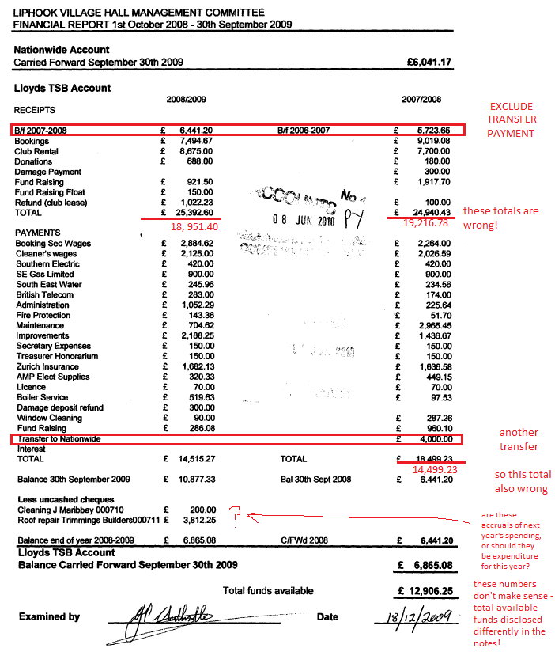
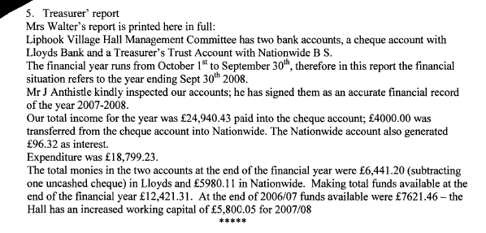

Bank transfers / balances as income and expenditure#
In some cases small charities record all of their retained bank balances at the start of the year as income, rather than as assets. Where possible we want to spot this and exclude it - as this is in fact income from previous years. .
We may be able to spot this during our data analysis once data entry has been completed, but it would be ideal if we can write a set of rules to eliminate this false income and expenditure whilst the accounts are open in front of the operator.
When the accounts use the standard form provided by the Charity Commission for receipts and payments accounts, open and closing balances are normally clearly marked:
E.g. http://www.charitycommission.gov.uk/Accounts/Ends96/0001018896_ac_20120531_e_c.pdf
However, some charities submit accounts (and report their income and expenditure to the Charity Commission) in a confused fashion
E.g. http://www.charitycommission.gov.uk/Accounts/Ends96/0001010596_ac_20111231_e_c.pdf
The accounts below provide an example of how confusing this can be.
http://www.charitycommission.gov.uk/ScannedAccounts/Ends61/0000211861_ac_20090930_e_c.pdf
In this case, the ideal scenario is for the technician to spot that there is something funny going on, and not enter the transfer payments as income and expenditure. So rather than entering £25,393 for income in the below example for 2008/9 simply enter the "real transactions" and then use the validate button to compute the corrected total.

There is a note included in the accounts, but this rather unhelpfully seems to refer to the prior financial year.
Looking at the above, there is presumably now £12,906 in the Lloyds account, and 5,980.11 in the Nationwide account (because no transfers are disclosed above, although they probably earned some interest? But if total funds available at the end of the last financial year were £12,421.31, and there was a surplus of income over expenditure of £4,436 as sort of disclosed in the accounts above, total funds are now in the region of £16,857??
This is perhaps a route to insanity. I think we might need a rule along the lines of "if the total funds are as confusing as this, do not enter a total for current funds, because whatever you put it will be guess work?
